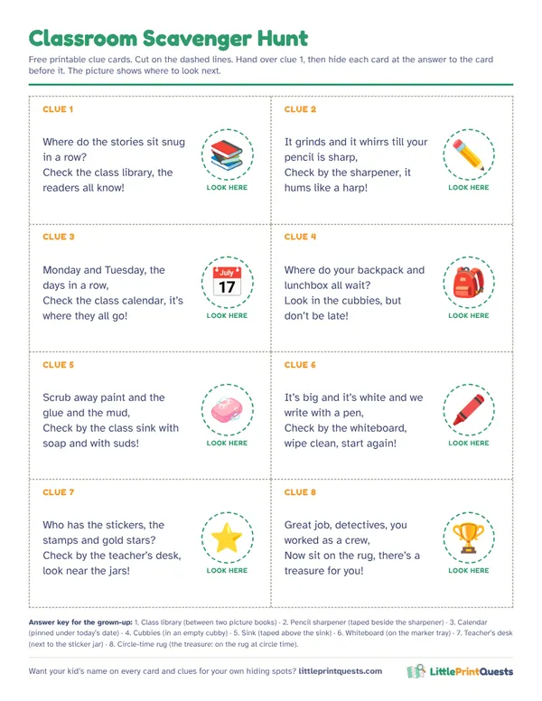

Classroom scavenger hunt for preschool to grade 2
A classroom hunt works for the first week of school, a class party, indoor recess or the last day before a break. Here are eight rhyming clues for spots every classroom has, and how to run it with twenty kids without chaos.
Make a printable hunt8 free rhyming clues
Hide each clue at the answer to the clue before it. The treasure waits on the circle-time rug.
Clue 1
Where do the stories sit snug in a row?
Answer: Class library. Hide it: Between two picture books.
Check the class library, the readers all know!Clue 2
It grinds and it whirrs till your pencil is sharp,
Answer: Pencil sharpener. Hide it: Taped beside the sharpener.
Check by the sharpener, it hums like a harp!Clue 3
Monday and Tuesday, the days in a row,
Answer: Calendar. Hide it: Pinned under today’s date.
Check the class calendar, it’s where they all go!Clue 4
Where do your backpack and lunchbox all wait?
Answer: Cubbies. Hide it: In an empty cubby.
Look in the cubbies, but don’t be late!Clue 5
Scrub away paint and the glue and the mud,
Answer: Sink. Hide it: Taped above the sink.
Check by the class sink with soap and with suds!Clue 6
It’s big and it’s white and we write with a pen,
Answer: Whiteboard. Hide it: On the marker tray.
Check by the whiteboard, wipe clean, start again!Clue 7
Who has the stickers, the stamps and gold stars?
Answer: Teacher’s desk. Hide it: Next to the sticker jar.
Check by the teacher’s desk, look near the jars!Clue 8
Great job, detectives, you worked as a crew,
Answer: Circle-time rug. Hide it: The treasure: on the rug at circle time.
Now sit on the rug, there’s a treasure for you!
Free printable clue cards
All 8 clues on one sheet with picture hints for pre-readers, dashed cut lines and an answer key for the grown-up doing the hiding. Print it, cut it, hide it.

Download the free printable (PDF)
Running it with a whole class
- Teams of four. Give each team a color and its own set of cards.
- Staggered starts. Each team starts at a different clue and loops around, so five teams are never at the sharpener at once. All the trails end on the rug.
- One job each. A reader, a finder, a card keeper and a leader. Swap jobs at every clue.
Learning twists
- Sight words: add a sight word to each card; the team reads it before moving on.
- Letter hunt: each clue holds a letter; at the end, teams unscramble them into a word.
- Math lock: the next spot only comes after solving a sum, like 3 + 2 = the cubby number.
- New classroom tour: in the first week, the trail doubles as a tour of where everything lives.
Pretend play centers
The same printables make dramatic play centers: a class post office for writing letters, a library for checking out books, a grocery store for counting money, or a doctor’s clinic for caring for stuffed animals.
Questions
How do you do a scavenger hunt with a whole class?
Split the class into teams of four, give each team its own colored cards and start each team at a different clue so they don’t crowd the same spot. All trails end at the same treasure.
How long does a classroom scavenger hunt take?
About 20 minutes with eight clues, plus five minutes to hide the cards before the kids come in.
More hunt ideas
- Birthday party hunt
- Ages 3 to 5
- Ages 6 to 8
- Thanksgiving hunt
- Apartment Scavenger Hunt
- Indoor Scavenger Hunt for a House
- Backyard Scavenger Hunt
- Dinosaur hunt
- Superhero hunt
- Pirate hunt
- Outer Space hunt
- Princess & Knights hunt
- Unicorn hunt
- Mermaid hunt
- Construction hunt
- Pet Vet hunt
- Easter hunt
- Halloween hunt
- Christmas hunt
- Valentine’s hunt
- Firefighter hunt
- Ice Kingdom hunt
- Race Car hunt
- Pizza Shop hunt
- Burger Shop hunt
- Grocery Store hunt
- Post Office hunt
- Library hunt
- Police Station hunt
- Dentist hunt
- Pet Shop hunt
- Coffee Shop hunt
- Italian Restaurant hunt
- Auto Shop hunt
- Play Kitchen hunt
- Doctor hunt
- Puppet Theater hunt
- Secret Agent hunt
- Dress-Up hunt
- Ice Cream hunt
- Airport hunt